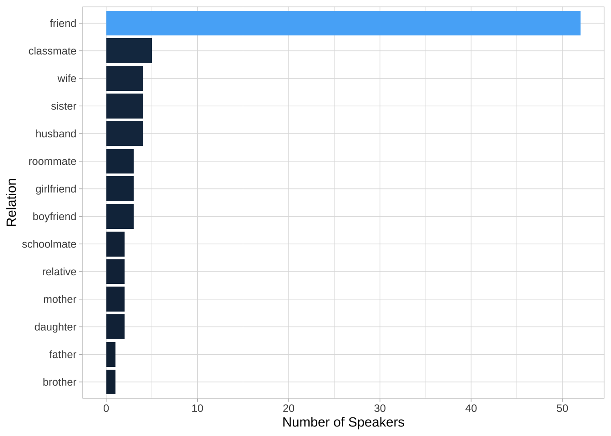
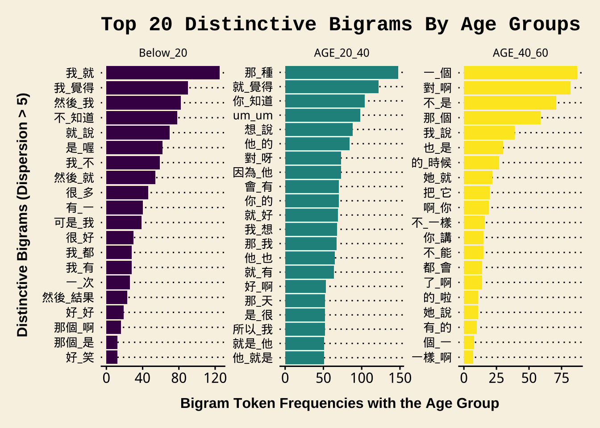

Chapter 11 Structured Corpus
There are a lot of pre-collected corpora available for linguistic studies. This chapter will demonstrate how you can load existing corpora in R and perform basic corpus analysis with these data.
To facilitate the sharing of corpus data, the corpus linguistic community has now settled on a few common schemes for textual data storage and exchange. In particular, I would like to talk about two common types of corpus data representation: CHILDES (this chapter) and XML (Chapter 12).
11.1 NCCU Spoken Mandarin
In this demonstration, I will use the dataset of Taiwan Mandarin Corpus for illustration. This dataset, collected by Prof. Kawai Chui at National Cheng-Chi University, includes spontaneous face-to-face conversations of Taiwan Mandarin. The data transcription conventions can be found on the NCCU Corpus Official Website.
Generally, the NCCU corpus transcripts follow the conventions of CHILDES format. In computational text analytics, the first step is always to analyze the structure of the textual data.
11.2 CHILDES Format
The following is an excerpt from the file demo_data/data-nccu-M001.cha from the NCCU Corpus of Taiwan Mandarin. The conventions of CHILDES transcription include:
- The lines with headerinformation begin with
@ - The lines with utterances begin with
@ - The indented lines refer to the utterances of the continuing speaker turn
- Words are separated by spaces
The meanings of transcription symbols used in the corpus can be found in the documention of the corpus.

11.3 Loading the Corpus
The corpus data is available in our demo_data/corp-NCCU-SPOKEN.tar.gz, which is a zipped archived file, i.e., one zipped tar file including all the corpus documents.
We can use the readtext::readtext() to load the data.
In this step, we treat all the *.cha files as if they are normal text files (i.e. .txt) and load the entire corpus into a data frame with two columns: doc_id and text (The warning messages only warn you that by default readtext() takes only .txt files).
11.4 From Text-based to Turn-based DF
Now the data frame NCCU is a text-based one, where each row refers to one transcript file in the corpus.
Before we do further tokenization, we first need to concatenate all same-turn utterances (i.e., utterances with no speaker ID at the initial of the line) with their initial utterance of the speaker turn, and then we use unnest_tokens() to transform the text-based DF into a turn-based DF.
NCCU_turns <- NCCU %>%
mutate(text = str_replace_all(text,"\n\t"," ")) %>% # deal with same-speaker-turn utterances
unnest_tokens(turn,
text,
token = function(x) str_split(x, pattern = "\n"))
NCCU_turns11.5 Metadata vs. Utterances
Lines starting with @ are the headers of the transcript while lines starting with * are the utterances of the conversation. We split our NCCU_turns into:
NCCU_turns_meta: a DF with all header linesNCCU_turns_utterance: a DF with all utterance lines
# Metadata
NCCU_turns_meta <- NCCU_turns %>%
filter(str_detect(turn, "^@")) # extract all lines starting with `@`
# Utterance
NCCU_turns_utterance <- NCCU_turns %>%
filter(str_detect(turn, "^\\*")) %>% # extract all lines starting with `*`
group_by(doc_id) %>%
mutate(turn_id = row_number()) %>%
ungroup %>%
tidyr::separate(col="turn", # extract SPID
into = c("SPID", "turn"),
sep = ":\t") %>%
mutate(turn2 = turn %>% # clean up utterances
str_replace_all("\\([(\\.)0-9]+?\\)"," <PAUSE> ") %>% # <PAUSE>
str_replace_all("\\&\\=[a-z]+"," <EXTRALING> ") %>% # <EXTRALING>
str_replace_all("[\u2308\u2309\u230a\u230b]"," ") %>% # overlapping talk tags
str_replace_all("@[a-z:]+"," ") %>% # code switching tags
str_replace_all("\\s+"," ") %>% # additional whitespaces
str_trim())When extracting all the utterances of the speaker turns, we perform data preprocessing as well. Specifically, we:
- Replace all pause tags with
<PAUSE> - Replace all extralinguistic tags with
<EXTRACLING> - Remove all overlapping talk tags
- Remove all code-switching tags
- Remove duplicate/trailing/leading spaces
The turn-based DF, NCCU_turns_utterance, includes the utterance of each speark turn as well as the doc_id, turn_id and the SPID. All this metadata information can help us connect each utterance back to the original conversation.
11.6 Word-based DF and Frequency List
Because the NCCU corpus has been word segmented, we can easily transform the turn-based DF into a word-based DF using unnest_tokens(). The key is that we specify our own tokenization function token =....
The tokenization method is simple: tokenize the utterance into words based on the delimiter of whitespaces.
NCCU_words <- NCCU_turns_utterance %>%
select(-turn) %>%
unnest_tokens(word,
turn2,
token = function(x) str_split(x, "\\s+")) %>%
filter(word!="")
NCCU_words %>%
head(100)With the word-based DF, we can create a word frequency list of the NCCU corpus.
NCCU_words_freq <-NCCU_words %>%
count(word, doc_id) %>%
group_by(word) %>%
summarize(freq = sum(n), dispersion = n()) %>%
arrange(desc(freq), desc(dispersion))
NCCU_words_freq %>%
head(100)With word frequencies, we can generate a word cloud to have a quick overview of the word distributions in NCCU corpus.
# wordcloud
require(wordcloud2)
NCCU_words_freq %>%
filter(str_detect(word, "^[^<a-z]")) %>% # remove annotations/tags
select(word, freq) %>%
wordcloud2::wordcloud2(size=0.9, shape="diamonds")
11.7 Concordances
If we need to identify turns with a particular linguistic unit, we can make use of the data wrangling tricks to easily extract speaker turns with the target pattern.
You can of course make use of regular expressions to extract more complex constructions and patterns from the utterances.
Exercise 11.1 If we are interested in the use of the verb 覺得. After we extract all the speaker turns with the verb 覺得, we may need to know the subjects that often go with the verb.
Please identify the word before the verb for each concordance token as one independent column of the resulting data frame (see below). Please note that one speaker turn may have more than one use of 覺得.
Please create a barplot as shown below to summarize the distribution of the top 10 frequent words that directly precedes 覺得.
- Among the top 10 words, you would see “的 覺得” combinations, which are counter-intuitive. Please examine these tokens and explain why.
Alternatively, we can also create a tokens object and apply the kwic() from quanteda for concordance lines:
# `tokens` object
NCCU_tokens<- NCCU_turns_utterance$turn2 %>%
str_split("\\s+") %>%
map(function(x) x[nzchar(x)]) %>%
set_names(str_c(NCCU_turns_utterance$doc_id,
NCCU_turns_utterance$turn_id,
sep="-")) %>%
as.tokens
# check token numbers
sum(sapply(NCCU_tokens, length)) # based on `tokens`## [1] 194670## [1] 194670# We can add docvars to `tokens`
docvars(NCCU_tokens)<- NCCU_turns_utterance[,c("doc_id","SPID", "turn_id")] %>%
mutate(Text = doc_id)
# KWIC
kwic(NCCU_tokens, "覺得", 8)11.8 Collocations (Bigrams)
Now we extend our analysis beyond single words.
Please recall the ngram_chi() function we have defined and used several times in previous chapters.
# functions from ch Chinese Text Processing
ngram_chi <- function(text, n = 2, delimiter = "_"){
word_vec = strsplit(text, "\\s|\u3000") %>% unlist
if(length(word_vec)>=n){
map2_chr(.x= 1:(length(word_vec)-n+1),
.y = n:length(word_vec),
.f= function(x,y) str_c(word_vec[x:y], collapse=delimiter))
}else{
return("")
}#endif
}#endfuncWe use the self-defined tokenization function together with unnest_tokens() to transform the turn-based DF into a bigram-based DF.
system.time(
NCCU_bigrams <- NCCU_turns_utterance %>%
select(-turn) %>%
unnest_tokens(bigrams,
turn2,
token = function(x) map(x, ngram_chi, n = 2)) %>%
filter(bigrams!="")
)## user system elapsed
## 2.867 0.005 2.871Please note that when we perform the n-gram tokenization, we take each speaker turn as our input. This step is important because this would make sure that we don’t get bigrams that span different speaker turns.
To determine significant collocations in conversation, we can compute the relevant distributional statistics for each bigram type, including:
- frequencies
- dispersion
- collocation strength (lexical associations)
We first compute the frequencies and dispersions of bigrams.
NCCU_bigrams_freq <- NCCU_bigrams %>%
count(bigrams, doc_id) %>%
group_by(bigrams) %>%
summarize(freq = sum(n), dispersion = n()) %>%
arrange(desc(freq), desc(dispersion))
NCCU_bigrams_freq %>%
filter(!str_detect(bigrams, "<")) %>%
top_n(100, freq)Exercise 11.2 In the above example, we compute the dispersion based on the number of documents where the bigram occurs. Please note that the dispersion can be defined on the basis of the speakers as well, i.e., the number of speakers who use the bigram at least once in the corpus.
How do we get dispersion statistics like this? Please show the top frequent 100 bigrams and their SPID-based dispersion statistics.To compute the lexical associations, we need to:
- remove bigrams with para-linguistic tags
- exclude bigrams of low dispersion
- get necessary observed frequencies (e.g., w1 and w2 frequencies)
- get expected frequencies (for more advanced lexical association metrics)
NCCU_bigrams_freq %>%
filter(!str_detect(bigrams, "<")) %>% # exclude bigrams with para tags
filter(dispersion >= 5) %>% # set bigram dispersion cut-off
rename(O11 = freq) %>%
tidyr::separate(col="bigrams", c("w1", "w2"), sep="_") %>% # split bigrams into two columns
mutate(R1 = NCCU_words_freq$freq[match(w1, NCCU_words_freq$word)],
C1 = NCCU_words_freq$freq[match(w2, NCCU_words_freq$word)]) %>% # retrieve w1 w2 unigram freq
mutate(E11 = (R1*C1)/sum(O11)) %>% # compute expected freq of bigrams
mutate(MI = log2(O11/E11), # compute associations
t = (O11 - E11)/sqrt(E11)) -> NCCU_collocations
NCCU_collocations %>%
arrange(desc(dispersion), desc(MI)) # sorting by MI11.9 N-grams (Lexical Bundles)
We can also extend our analysis to n-grams of larger sizes, i.e., the lexical bundles.
system.time(
NCCU_ngrams <- NCCU_turns_utterance %>%
select(-turn) %>%
unnest_tokens(ngram,
turn2,
token = function(x)
map(x, ngram_chi, n = 4, delimiter = "_")) %>%
filter(ngram != "") # remove empty tokens (due to the short lines)
)## user system elapsed
## 2.905 0.012 2.917NCCU_ngrams %>%
count(ngram, doc_id) %>%
group_by(ngram) %>%
summarize(freq = sum(n), dispersion = n()) %>%
arrange(desc(dispersion), desc(freq)) %>%
ungroup %>%
filter(!str_detect(ngram,"<")) -> NCCU_ngrams_freq
NCCU_ngrams_freq %>%
filter(dispersion >= 5)11.10 Connecting SPID to Metadata
So far the previous analyses have not used any information of the headers. In other words, the connection between the utterances and their corresponding speakers’ profiles are not transparent in our current corpus analysis.
However, for socio-linguists, the headers of the transcripts can be very informative.
For example, in the NCCU_turns_meta, we have more demographic information of the speakers, which allows us to further examine the linguistic variations on various social factors (e.g., areas, ages, gender etc.)
11.11 Corpus Headers
In this section, I would like to demonstrate how to extract speaker-related information from the headers (i.e., NCCU_turns_meta) and link these speaker profiles to our corpus data (i.e., NCCU_turns_utterance).
Based on the metadata of each file header, we can extract demographic information related to each speaker, including their ID, age, gender, etc.
In the headers of each transcript, the demographic profiles of each speaker are provided in the lines starting with @id:\t; and each piece of information is separated by a pipe sign | in the line. All speakers’ profiles in the corpus follow the same structure.
To parse the data of the speaker profiles in the turn column of NCCU_turns_meta:
- we extract all lines starting with
@id - separate the column into several columns using
| - select relevant columns (speaker profiles)
- rename the columns
- create unique IDs for each speaker of each transcript
NCCU_meta <- NCCU_turns_meta %>%
filter(str_detect(turn, "^@(id)")) %>%
separate(col="turn",
into=str_c("V",1:11, sep=""),
sep = "\\|") %>%
select(doc_id, V2, V3, V4, V5, V7, V10) %>%
mutate(DOC_SPID = str_c(doc_id, V3, sep="_")) %>%
rename(AGE = V4,
GENDER = V5,
GROUP = V7,
RELATION = V10,
LANG = V2) %>%
select(-V3)
NCCU_meta11.12 Sociolinguistic Analyses
Now with NCCU_meta and NCCU_turns_utterance, we can now connect each utterance to a particular speaker (via SPID in NCCU_turns_utterance and DOC_SPID in NCCU_meta) and therefore study the linguistic variation across speakers of varying sub-groups/communities. The steps are as follows:
- We first extract the patterns we are interested in from
NCCU_turns_utterance; - We then connect the concordance tokens to their corresponding SPID profiles in
NCCU_meta; - We analyze how the patterns vary according to speakers of different profiles.
11.12.1 Check Bigrams Distribution By Age Groups
For example, we can look at bigrams used by speakers of varying age groups. The analysis requires the following steps:
- we retrieve target bigrams from
NCCU_bigrams - we generate
DOC_SPIDfor all bigrams tokens extracted - we map the
DOC_SPIDtoNCCU_metato get the speaker profiles of each bigram token - we recode the speaker’s age into a three-level factor for more comprehensive analysis (i.e.,
AGE_GROUP) - for each age group, we compute the bigram frequencies and dispersion
NCCU_bigrams_with_meta <- NCCU_bigrams %>%
filter(!str_detect(bigrams, "<")) %>%
mutate(DOC_SPID = str_c(doc_id, str_replace_all(SPID,"\\*",""), sep="_")) %>%
left_join(NCCU_meta, by = c("DOC_SPID" = "DOC_SPID")) %>%
mutate(AGE=AGE %>% str_replace_all(";","") %>% as.numeric) %>%
mutate(AGE_GROUP = cut(AGE,
breaks = c(0,20,40, 60),
label = c("Below_20","20-40","40-60")))
NCCU_bigrams_by_age <- NCCU_bigrams_with_meta %>%
count(bigrams,AGE_GROUP, DOC_SPID) %>%
group_by(bigrams, AGE_GROUP) %>%
summarize(freq= sum(n), dispersion = n()) %>%
filter(dispersion >= 5) %>%
ungroup
NCCU_bigrams_by_age11.12.2 Numbers of Bigrams above Cut-off by Age
NCCU_bigrams_by_age %>%
count(AGE_GROUP) %>%
ggplot(aes(x=AGE_GROUP, y = n, fill=AGE_GROUP))+
geom_bar(stat="identity") +
labs(y = "Number of N-grams of Dispersion > 1 (Speaker)")
11.12.3 Bigram Word clouds by Age
require(wordcloud2)
NCCU_bigrams_by_age %>%
filter(AGE_GROUP == "Below_20") %>%
select(bigrams, freq) %>%
top_n(100, freq) %>%
wordcloud2
NCCU_bigrams_by_age %>%
filter(AGE_GROUP == "20-40") %>%
select(bigrams, freq) %>%
top_n(100, freq) %>%
wordcloud2
NCCU_bigrams_by_age %>%
filter(AGE_GROUP == "40-60") %>%
select(bigrams,freq) %>%
top_n(100, freq) %>%
wordcloud2


Exercise 11.6 Please analyze the bigram variations in terms of speaker relations and present your findings/observations in your own way.
In NCCU Corpus, speaker relations include 14 different relations. You may consider collapsing these levels into larger categories in order to identify the general tendencies.